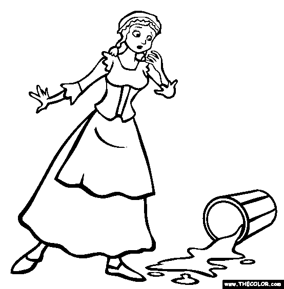

The Milkmaid and Her Pail
A Milkmaid had been out to milk the cows and was returning from the field with the shining milk pail balanced nicely on her head. As she walked along, her pretty head was busy with plans for the days to come.
"This good, rich milk," she mused, "will give me plenty of cream to churn. The butter I make I will take to market, and with the money I get for it I will buy a lot of eggs for hatching. How nice it will be when they are all hatched and the yard is full of fine young chicks. Then when May day comes I will sell them, and with the money I'll buy a lovely new dress to wear to the fair. All the young men will look at me. They will come and try to make love to me,—but I shall very quickly send them about their business!"

As she thought of how she would settle that matter, she tossed her head scornfully, and down fell the pail of milk to the ground. And all the milk flowed out, and with it vanished butter and eggs and chicks and new dress and all the milkmaid's pride.
Do not count your chickens before they are hatched.